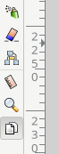
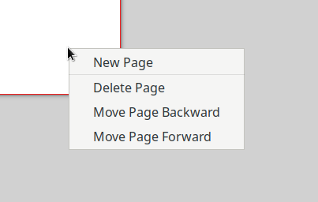

Начиная с версии 1.2, в Inkscape появился механизм работы с многостраничным документом. Вызывается он новой кнопкой с нарисованными на ней страничками:

После нажатия этой кнопки, можно кликнуть на любом свободном месте существующей страницы и вызвать контекстное меню:

После выбора пункта New Page, рядом с текущей страницей будет создана еще одна страница. Но вот незадача: новая страница будет иметь портретную ориентацию, а надо сделать ландшафтную. Как этого добиться?
Для этого необходимо выполнить следующие действия:
1. В уголках новой страницы будут квадратики, потянув за которые можно изменить размер листа страницы. Их нужно потянуть так, чтобы примерно получить геоментрию ландшафтного расположения листа.
2. В верхе